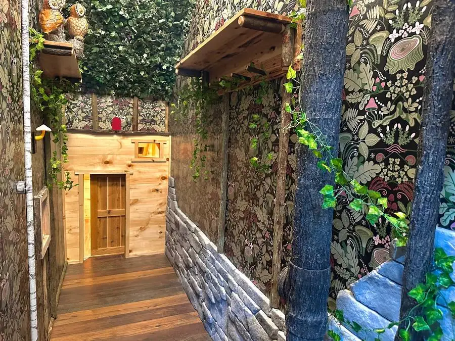
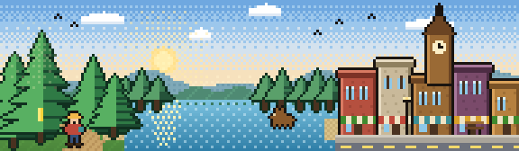
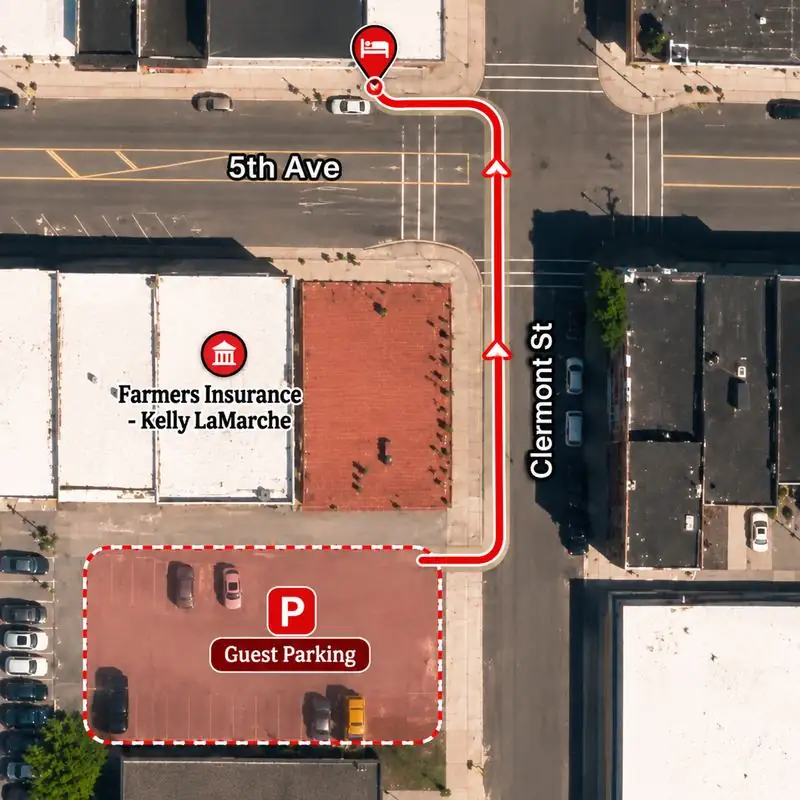

The Blessed Fig Tree opened in downtown Antigo in May 2023, in the former Buckalows Eatery at 800 Fifth Avenue. It carries about 4,000 books, mostly new with some used: history, philosophy, fantasy, Wisconsin and outdoors titles, and a manga section the shop counts among the best in northern Wisconsin.
The owner runs the shop and is usually downstairs during business hours. Ask for a recommendation, grab an unusual snack, or pick out something to read.
Bookstore hours
Monday
Closed
Tuesday
10 AM to 6 PM
Wednesday
10 AM to 6 PM
Thursday
10 AM to 6 PM
Friday
10 AM to 8 PM
Saturday
10 AM to 8 PM
Sunday
10 AM to 6 PM
Central time. Holiday hours may vary.
800 5th Ave, downtown Antigo.
4.9★★★★★69 Google reviews
Reviews from people who have visited the shop.Quoted from Google
“The best bookstore ever. Super friendly with a huge selection of books in every topic. Perfect place to gift shop.”
Caitlyn B. · Google review
“My family and I stopped in today, and I’m convinced the owner is at least part fae. We parted with our money way too easily and enthusiastically for this place to be anything other than magical. What an absolute gem of a shop.”
Sharon F. · Google review
“Friendly staff. Large variety of new and used books as well as many book related things. So much to see.”
Heather S. · Google review
“Wonderful selection and the owner is so sweet”
Christin W. · Google review
“Fun shop to explore! Loved the atmosphere the most.”
Windy-Marie K. · Google review
“Manga lovers will love this store!”
Melissa E. · Google review
“What a fun place and the owner is super nice.”
Momma J · Google review
“Great bookstore! Something for everyone!”
Matt R. · Google review
“Great place with varied selection of books, treats, gifts, statues, etc.”
A. W. · Google review
More reviews
“Very good store with a broad selection. And if they didn’t have it, they knew where to find it. The staff are also very knowledgeable on a broad array of topics and give great book recommendations.”
Mason W. · Google review
“You can tell he has so much pride in his incredible store. He has a lot of great merchandise and some of the coolest products.”
Sabrina D. · Google review
“This place has a magical vibe that is rare and beautiful. I went 3 times in my one week vacation to the area.”
Brian O. · Google review
“Great independent book store! A good selection for only a fraction of the cost that you would pay at a Barnes and Noble. Knowledgeable and friendly staff!”
Kayla M. · Google review
“This place is absolutely amazing! Such a beautiful little store with so much creativity and love put into it! Definitely worth checking out.”
Andrew L. · Google review
“Popped in today for the first time, such a great addition to our downtown! Bright smiles, helpful staff & AMAZING selection of a wide variety of books, local artist work & a welcoming environment!”
Ellen D. · Google review
“Wow. Went to the store for the first time yesterday. Owner is very nice and knowledgeable. There is a huge selection to choose from. I also found some unique treasures as well. I cannot wait to stop in again.”
Bonnie S. · Google review
“I stopped in on a whim and absolutely loved my experience here. The owner is friendly and helpful, and they have a good variety of books. I loved their section of books relating to tabletop RPGs.”
Zachary W. · Google review
“We love this place! Adorable book shop (don’t miss the secret reading nook - pure magic)”
Eleanor P. · Google review
Inside the shop
Der Kinderwald
The Child’s Forest is the secret reading nook tucked inside the shop: a woodland hideaway with a little wooden door, built for kids and for anyone young at heart. Bring a book from the shelves and settle in.

Der Kinderwald, the kids’ reading nook.
On the shelves
What you will find inside
About 4,000 personally selected books, mostly new with some used mixed in, instead of millions of algorithm-sorted listings. Walk in looking for one thing and leave with something you did not expect.
MangaA long wall of it, the section the shop is best known for, with collectible figures along the top shelves.
FantasyTwo full bookcases of fantasy, with wizard-themed gifts and a few dragons keeping watch.
History and philosophyNonfiction for long Northwoods winters, from the past to the big questions.
Wisconsin and the outdoorsBooks about the state, the Northwoods and getting outside in them.
Tabletop gamesA shelf of books for tabletop roleplaying games, for players and the people who run them.
Snacks, art and giftsImported chips, candy and drinks, work by local artists, and figures and statues worth a second look.
Stay upstairs
Sleep above the shelves
We rent furnished apartments with full kitchens in the same building, so you can spend a weekend, a work trip or a month above the shop. Check-in is at 3:00 PM and check-out is by 11:00 AM.
Langlade County calls itself the County of Trails, and Antigo is an Ice Age Trail Community. You can spend a day on foot without moving the car.

DowntownBoutiques, cafés, antiques and locally owned restaurants, including the Dixie Lunch, open for over 75 years. Yesterday's Sign Park tells the story of the main street through signs from past eras.
The public libraryDirectly across the street from the shop.
Springbrook TrailA 2.26-mile loop of asphalt, boardwalk and wood-chip path along Antigo Lake and Spring Brook, with an 18-hole disc golf course. Free, pet friendly and maintained year-round.
Ice Age TrailMore than 50 miles of the national scenic trail run through Langlade County.
Historical museumThe Langlade County Historical Society Museum, 404 Superior St, in the 1905 Carnegie library building. Free admission; call 715-627-4464 for current hours.
Lakes and streamsThe county counts 766 lakes and 391 miles of trout streams, plus groomed cross-country ski trails in winter.
A huge work in progress:this is an early, unfinished build. Expect rough edges, placeholder lines, missing story and things that change from week to week.
A free pixel-art adventure in the style of the 1990s role-playing games, set in the real streets of Antigo. Start in the shop at 800 5th Ave, walk downtown, step into the places you know and see where the story takes you.
It plays right here in your browser. Nothing to install, no account, and your save stays on your own device.
Best on a computer with a keyboard. Much of the town and most of the story are still being built.
Outside the shop on 5th Ave, in the game (work in progress).
The Antigo Almanac
Antigo's year, in real numbers
This almanac holds real numbers about Antigo's year: when people come, what they do, and where money moves. Every page names its source at the bottom.
The numbers describe the country, the state, the county or the region. None of them describes a single business.
Where Antigo has no data of its own, the page says so and uses the nearest honest stand-in.
It is not financial advice; it is a good place to start asking questions. The same almanac is in the game, where its pages are hidden around town.
The year in Antigo
Winter in Antigo
Jan
Feb
Mar
Apr
May
Jun
Jul
Aug
Sep
Oct
Nov
Dec
Dec Parade · night markets
Jan Trails open when snow allows
Feb Saturday events up north
Snowmobile trails open and close by county announcement. In 2025-26 they opened Jan 1 and closed Mar 3. The county keeps more than 500 miles of trail through about ten clubs.
Winter events cluster on Saturdays from late January through February, mostly in the northern towns: vintage sled shows, polar bear jumps, ice-fishing jamborees.
Downtown in December: the Christmas Parade and chili cook-off, Wednesday night markets until mid-month, and Santa at the historical museum on weekends. Muzzleloader deer season runs into early December.
Source: Langlade County trail reports and events calendar; Antigo Chamber; Wisconsin DNR. Dates are for 2025-26 and 2026.
Spring in Antigo
Jan
Feb
Mar
Apr
May
Jun
Jul
Aug
Sep
Oct
Nov
Dec
Mar Trails close
Apr Trout · bookstore day
May Opener · ATV · Off-Road
March and April are the quietest months for visitors up north (see When the Northwoods fills, under Visitors).
Inland trout streams opened to harvest on Apr 4, 2026, about a month earlier than before. The general fishing opener is the first Saturday in May (May 2, 2026). ATV trails, more than 106 miles of them, open May 1.
The Antigo Off-Road National runs at the fairgrounds in late May (May 29-31, 2026), with a kickoff parade the evening before. Independent Bookstore Day is the last Saturday in April.
Source: Wisconsin DNR; Langlade County trail reports and events calendar; Champ Off-Road 2026 schedule; American Booksellers Association.
Summer in Antigo
Jan
Feb
Mar
Apr
May
Jun
Jul
Aug
Sep
Oct
Nov
Dec
Jun Farmers market saturdays
Jul The Fourth · County Fair
Aug Tater Trot · dirt track
Farmers market: Saturdays 8 am to noon, early June to late September, at Peaceful Valley Park (420 Field St).
July 4: parade at 7 pm and fireworks at 9:20 pm, ending at the fairgrounds. The Langlade County Fair runs Thursday to Sunday at the turn of July and August (July 30 - Aug 2, 2026, its 140th year).
August adds the Tater Trot (Aug 8) and national dirt-track races at the fairgrounds (Aug 21-22). Nearby: the Crandon Brush Run (mid-June) and the Hodag Country Festival in Rhinelander (mid-July).
Source: Langlade County events calendar; Antigo Chamber; Travel Wisconsin. Dates are for 2026.
Fall in Antigo
Jan
Feb
Mar
Apr
May
Jun
Jul
Aug
Sep
Oct
Nov
Dec
Sep Bow season · color · harvest
Oct Color · youth hunt
Nov Gun deer · holiday run
Sept 12 opened archery and crossbow deer, fall turkey and grouse (2026). Gun deer season runs nine days from the Saturday before Thanksgiving (Nov 21-29, 2026).
Fall color runs about mid-September to mid-October. The county grows about 11,000 acres of potatoes a year, mostly seed; in 2019 the harvest peaked in the week of Sept 23.
The holiday run starts downtown: Christmas Market on Fifth Ave (Nov 14), Downtown Widows Weekend on the gun-deer opener, Small Business Saturday (Nov 28), and Wednesday night markets at 902 Fifth Ave from Nov 11. Crandon's Labor Day races draw tens of thousands.
Source: Wisconsin DNR; UW-Madison Extension; Langlade County events calendar; Antigo Chamber, 2026.
What the year says
U.S. bookstore sales Northwoods rental nights (1.0 = an average month)
J
F
M
A
M
J
J
A
S
O
N
D
Side by side, as indexes where 1.0 is an average month: national bookstore sales peak in December, while Northwoods visitor stays peak in July.
A shop here can see two busy seasons, summer visitors and holiday gifts. March and April are low on both lines.
Events stack on Saturdays and on a few big weekends: the fishing opener, the Off-Road National, the Fourth, the Fair, the gun-deer opener and the holiday run. A shop's own records, kept month by month, will say more than any average here.
Source: Computed from two pages of this almanac: Census bookstore sales 2022-2025 and Rhinelander rental occupancy 2025-26.
Books and shops
When bookstores sell
U.S. bookstore sales by month
1.23J
0.8F
0.84M
0.86A
0.93M
0.84J
0.86J
1.3A
1.07S
0.84O
0.87N
1.55D
Average month
Across U.S. bookstores, December sells about 1.55 times an average month. February is the quietest, at about 0.80.
January and August also run high, mostly from textbook buying, since the count includes college stores. June and July together are 13 to 16 percent of the year, under the 16.7 percent an even split would give.
As arithmetic: a shop that sold $100 on an average day and followed this pattern would sell about $155 on a December day and about $80 on a February day.
Source: U.S. Census Bureau, Monthly Retail Trade, book stores (NAICS 451211), not seasonally adjusted; average monthly shares 2022-2025 (FRED MRTSSM451211USN).
What books sell
Self-help+14.7%
Religion+5.4%
All print books+0.3%
Adult nonfiction-1.5%
Biography & memoir-7.0%
U.S. print book sales held steady in 2025 at 762.4 million copies. Within nonfiction, self-help and religion grew while biography and memoir fell.
Independent stores keep opening: the booksellers' association counted 3,417 member companies in May 2026, up 151 percent since 2020, and 605 new independent stores opened in 2025.
Source: Circana BookScan, via Publishers Weekly, January 2026; American Booksellers Association, May 2026.
Tea on the shelf
U.S. tea sales ($)+2.6%
U.S. tea volume+0.9%
Green tea imports+4.9%
Black tea imports-11.7%
U.S. bag and loose-leaf tea sales rose 2.6 percent to $1.7 billion (year to April 2025) on volume up 0.9 percent. In 2025 green tea imports rose and black tea imports fell; tea from Japan rose 41 percent.
The rules: a tea sold for taste is a food. A label or sign saying it treats a disease makes it an unapproved drug under FDA rules, and the FTC expects health claims to rest on solid trials.
Source: Circana via the Tea Association of the U.S.A.; U.S. FDA, structure/function claims (21 CFR 101.93); FTC Health Products Compliance Guidance (2022).
Shop-local days
Jan
Feb
Mar
Apr
May
Jun
Jul
Aug
Sep
Oct
Nov
Dec
Apr Independent Bookstore Day
Nov Small Business Saturday
Independent Bookstore Day (last Saturday in April) drew more than 1,600 stores in 2025. No overall sales lift has been published; stores report it one by one.
Small Business Saturday falls after Thanksgiving; its large national totals come from its sponsor's surveys. Passport programs grow: Chicago's bookstore-day passport went from about 150 finished in 2017 to more than 700 in 2023.
The plainest measure is a shop's own count: the same day last year against the same day this year.
Source: Publishers Weekly, Independent Bookstore Day 2025; American Express (Small Business Saturday); Chicago Independent Bookstore Day reports.
Where shoppers spend
General merchandise2.44
Building & garden2.32
Gas stations1.98
Cars & parts1.62
Health & personal1.21
Furniture0.87
Misc. stores0.81
Book, hobby, music0.73
Clothing0.67
A pull factor above 1 means a county sells more in a category than its own residents would be expected to buy; below 1 means residents buy part of it elsewhere.
In 2022 Langlade's retail pull factor was 1.41, so the county draws shoppers from beyond its borders. The strongest categories were general merchandise, building supplies, fuel and cars.
Book, hobby, sporting-goods and music stores scored 0.73: about 73 cents of sales here for every dollar the state pattern predicts.
Source: Deller and Zumbrunnen, UW-Madison Extension, A Trade Area Analysis of Wisconsin Retail and Service Markets (2022 data), August 2023.
Visitors
When the Northwoods fills
Rental nights booked, Rhinelander
35.5J
33.5F
16.1M
15.4A
38.4M
50J
65J
57.7A
45.6S
35.7O
32.5N
29.7D
Nobody publishes monthly visitor counts for Antigo. The nearest stand-in is short-term rentals in Rhinelander, in Oneida County to the north.
Occupancy peaks in July at 65 percent and bottoms out in March and April at about 15 to 16 percent. June to August brought about 43 percent of the year's rental revenue. Nightly prices barely move ($215 to $245); the season shows in nights booked, not in price.
A 2002 study of 20 northern counties, Langlade among them, found summer brought about 52 percent of traveler spending.
Source: AirROI Rhinelander market report, Oct 2025 - Sep 2026 (35 listings); Davidson-Peterson Associates for the Wisconsin Dept. of Tourism, Northwoods tourism profile (2002 data).
Visitor dollars
Tourism, total economic impact
2022$77M
2023$82M
2024$84M
2025$87M
Tourism's total economic impact in Langlade County set a record each year from 2022 to 2025.
In 2025 visitors spent $60.3 million directly. Tourism supported 439 jobs and $4.6 million in state and local taxes. That spending averages about $165,000 a day, though it is not spread evenly through the year.
Visitor spending grew 2.8 percent in 2025, below the state's 4.4 percent and close to the 2.7 percent inflation rate.
Source: Wisconsin Department of Tourism (Travel Wisconsin), economic impact of tourism, county data 2022-2025.
The neighbors
Oneida$302.8M
Vilas$302.6M
Marathon$282.2M
Shawano$77.6M
Lincoln$74.4M
Langlade$58.2M
Forest$15.4M
Menominee$3.4M
Direct visitor spending in 2024, by county. Langlade ranked 46th of Wisconsin's 72 counties, with about 0.36 percent of the state total.
The lake counties to the north, Oneida and Vilas, each drew about five times as much. Lincoln and Shawano drew 28 to 33 percent more than Langlade.
Source: Wisconsin Department of Tourism, county economic impact data, 2024; rank computed from the 72-county table.
Seasonal homes
Forest49.6%
Vilas48.6%
Oneida36.7%
Langlade21.5%
Wisconsin7.1%
Share of all housing held for seasonal or recreational use, 2010 Census. Langlade had 2,643 seasonal homes, three times the state's share, up from 2,158 in 2000.
Newer counts need a Census data request and were not pulled for this page.
Source: U.S. Census Bureau, 2000 and 2010 Census, housing units vacant for seasonal, recreational or occasional use.
Snow years
2023-24Little snow
2024-25About 1 weekOf trail riding
2025-26Jan 1 - mar 3Best in 3 years
Winter visits here ride on snow. Trails open only when the county says there is enough.
The winters of 2023-24 and 2024-25 had little snow; in 2024-25 Langlade had about one week of snowmobiling. 2025-26 was the strongest winter in three years.
Planning for a winter with almost no trail days is part of the pattern.
Source: Langlade County trail reports; WXPR regional reporting, 2024-2026.
Cars past the door
Downtown, US 45/47/52/6412,500-13,200
WI 52/64 east of US 458,500
US 45 at the city edges7,600-8,400
5th Ave next to US 454,800-4,900
5th Ave farther out2,100-3,800
Average vehicles per day, 2025. The busiest count in the city is the downtown stretch where four highways share one road.
Counts drop by a third or more at the city's edges. Monthly or seasonal swings on these roads were not available for this page.
Source: Wisconsin Department of Transportation, annual average daily traffic (AADT) counts, 2025.
The town
The town in numbers
8,100People, 2020 census
1.93People per household
$104,800Median home valueState: $266,500
26%Age 65 and over
Antigo counted 8,100 people in the 2020 Census. Estimates for 2025 put it at 8,036 (state) and 8,060 (Census Bureau).
Household size and home value are 2020-2024 survey estimates. About one resident in four is 65 or older.
Source: U.S. Census Bureau: 2020 Census, ACS 2020-2024, QuickFacts, July 2025 estimate; Wisconsin DOA estimate, Jan 1, 2025.
People over time
Antigo, people counted each census
4,4241890
5,14500
7,1961910
8,45120
8,6101930
9,49540
9,9021950
9,69160
9,0051970
8,65380
8,2761990
8,56000
8,2342010
8,10020
Antigo grew fast with the railroad and the sawmills: 4,424 people in 1890 and 8,451 by 1920. It peaked at 9,902 in 1950 and counted 8,100 in 2020.
The county peaked earlier, at 23,227 in 1940, and has stayed between about 19,200 and 20,700 since 1960.
The county is older now: its median age rose from 40 in 2000 to 49.5 in 2020, and the share 65 or older from 18.8 to 25.2 percent.
Across rural America, counties have lost roughly a quarter or more of their expected young adults each decade since the 1970s, while gaining adults aged 55 to 74.
Source: U.S. Census Bureau decennial counts, 1890-2020 (county and city tables); 2000 and 2020 Census age data; Johnson and Winkler, Migration signatures across the decades, Demographic Research 32 (2015), 1065-1080.
What households earn
Antigo$45,520
Langlade Co.$55,878
Wisconsin$77,485
Median household income, 2020-2024 survey estimates. Antigo's figure has a margin of error of about plus or minus $5,800.
Poverty rates: Antigo 19.5 percent, the county 13.5, the state 10.6.
Transfer payments such as Social Security and Medicare made up 31.6 percent of county personal income in 2022, against 18.9 percent statewide.
Source: U.S. Census Bureau, American Community Survey 5-year estimates, 2020-2024; U.S. Bureau of Economic Analysis, county personal income, 2022.
Who works here
Trade & transport2,177
Manufacturing1,319
Education & health1,223
Leisure & hospitality645
Public administration405
Professional383
Farms, forest, mines374
Finance301
All other443
Jobs located in Langlade County, 2023 average: 7,268. Stores, trucking and utilities are the largest group; manufacturing is second, about one job in five.
In 2024 the county's unemployment rate was 3.5 percent (state 3.1), and about 57 percent of adults were in the labor force (state 65.4).
Source: Wisconsin DWD, Langlade County Workforce Profile (QCEW 2023), rev. May 2025; NCWRPC Langlade County profile, 2026.
What the town is worth
Residential63.4%
Commercial31.4%
Manufacturing*5.2%
The state values all taxable property in the City of Antigo at $599 million (2025), one fifth of the county's $3.0 billion. The city holds about 71 percent of the county's commercial value.
Countywide, commercial property is 8.8 percent of value against 19.7 percent statewide; homes and forest land weigh more here.
* The manufacturing row was unlabeled in the source; its numbers complete the table, so treat it as inferred.
Source: Wisconsin Department of Revenue, Statement of Equalized Values, 2025 (including TIF districts).
The Antigo flats
Vegetables & potatoes$67.7M
Milk$52.4M
All other (computed)$25.6M
The farmland around Antigo is an outwash plain capped with windblown silt. Its soil, Antigo silt loam, has been Wisconsin's state soil since 1983; its official type location lies just east of town, near state historical marker 280.
The 2022 Census of Agriculture counted 333 farms (down 23 percent since 2017) selling $145.7 million (up 42 percent). Potatoes covered 10,562 acres, and the county ranked 4th in Wisconsin for vegetable and potato sales.
UW Extension calls the county first in the state for seed potatoes.
Source: USDA NASS, 2022 Census of Agriculture county profile; UW-Madison Extension; NRCS official series description, Antigo series; WGNHS Information Circular 52 (1986).
The county's half cent
County sales tax paid out, by month
0.868J
1.107F
0.781M
0.655A
1.069M
0.807J
1.224J
1.255A
0.985S
1.253O
0.992N
1.004D
Average
Each taxable sale adds half a cent per dollar for the county, on top of the state's five cents. A $20 sale sends $1.00 to the state and $0.10 to the county.
The county received $2.35 million in 2024 and $2.50 million in 2025 (up 6.3 percent); January to October 2026 ran 3 percent ahead.
Across 2024 and 2025, payouts ran highest in July, August and October and lowest in March, April and June. These are payout months, and the lag after a sale is not shown here, so read the shape as approximate.
Source: Wisconsin Department of Revenue, county sales tax distributions 2024-2026; index = month divided by that year's monthly average, 2024-2025.
When public money moves
Jan
Feb
Mar
Apr
May
Jun
Jul
Aug
Sep
Oct
Nov
Dec
Feb Tax settlement
Mar Lottery credit
Jul State aid 15%
Nov State aid 85%
In the Town of Antigo, 70 percent of 2025 property taxes had come in by the February settlement.
The state pays its lottery and gaming credit in March, and county and municipal aid in two parts: about 15 percent in late July and 85 percent in mid-November.
In 2025 Langlade County received $710,324 in county and municipal aid and $547,388 in supplemental aid.
Source: Wisconsin Department of Revenue, local government payment schedules and settlement reports, 2025.
Compiled for The Blessed Fig Tree, 800 Fifth Ave, Antigo, November 2026. Tap a title to open or close a page.
Find us
800 5th Ave, Antigo
Email:owner@theblessedfigtree.com · Phone or text:715-628-0468
Parking:Parking in front of the building is limited to 2 hours. For longer visits, use the Guest Parking lot across the street.

Park in the Guest Parking lot (red P). Follow the red route up the Clermont St sidewalk and across 5th Ave to the pin. The shop is right there. The curb in front of the store is the 2-hour parking.The overnight lot across the street, with the vintage signs at its edge.